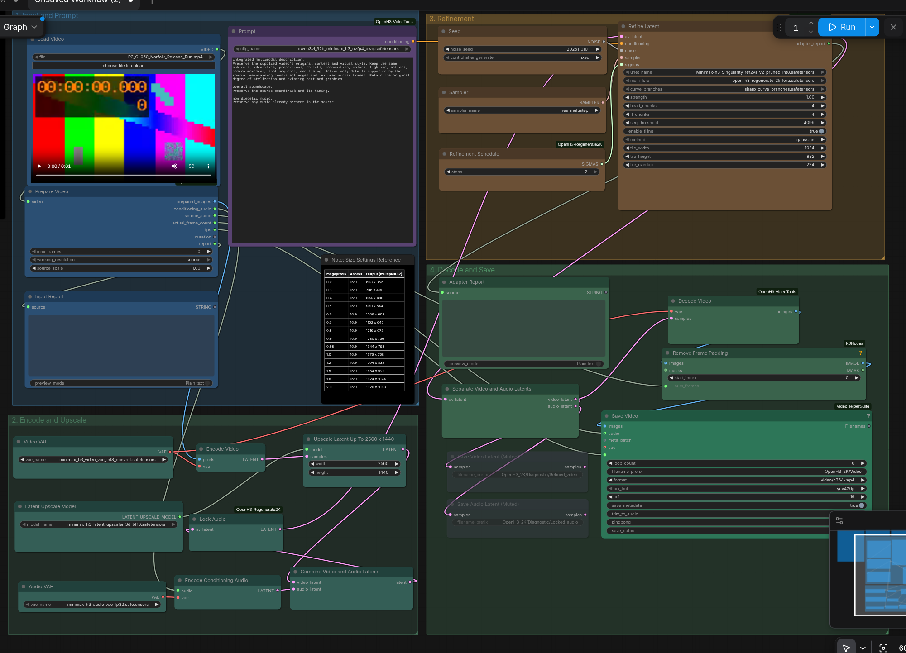
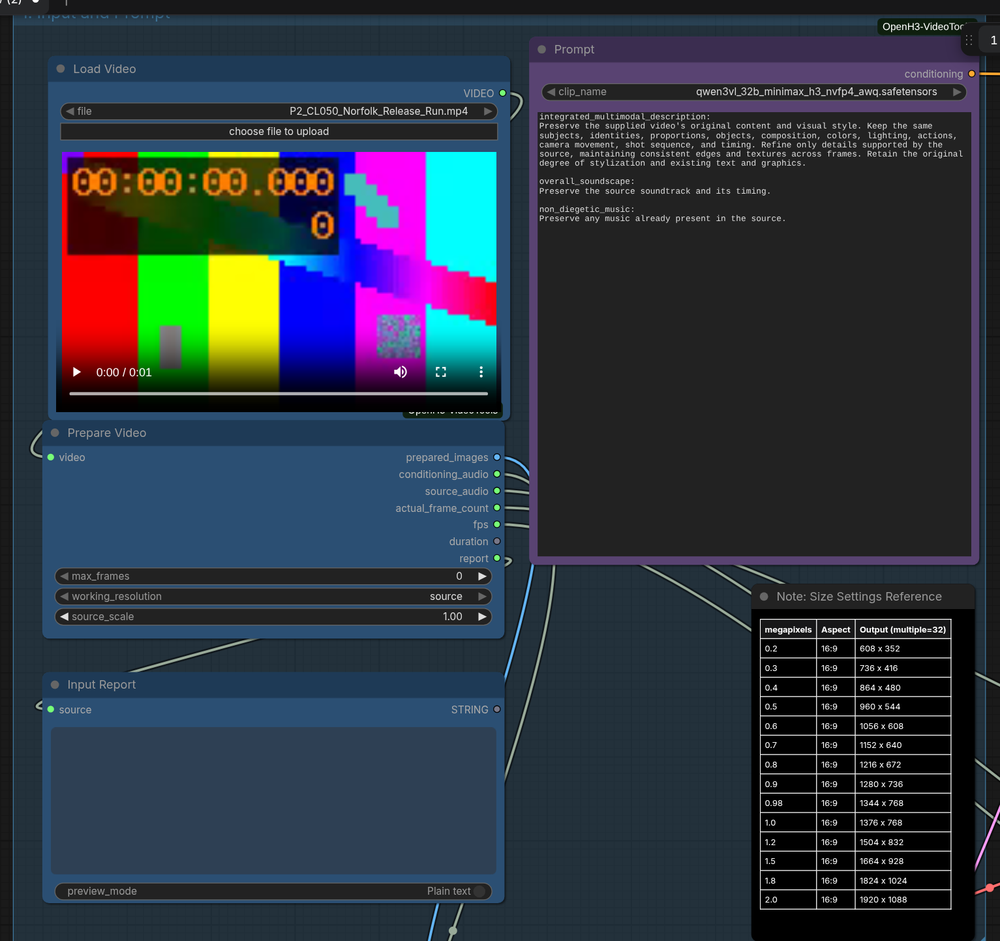
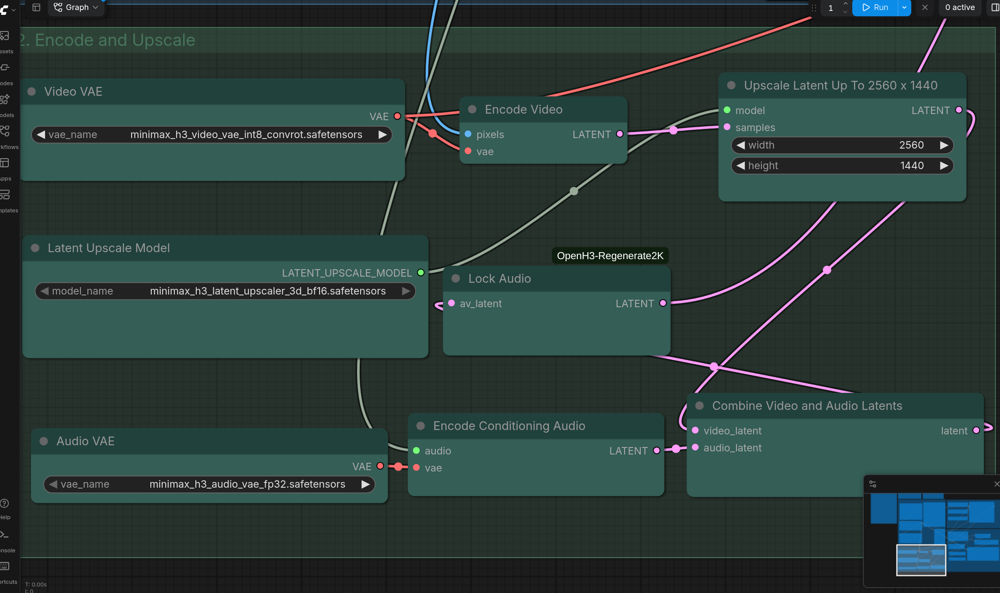
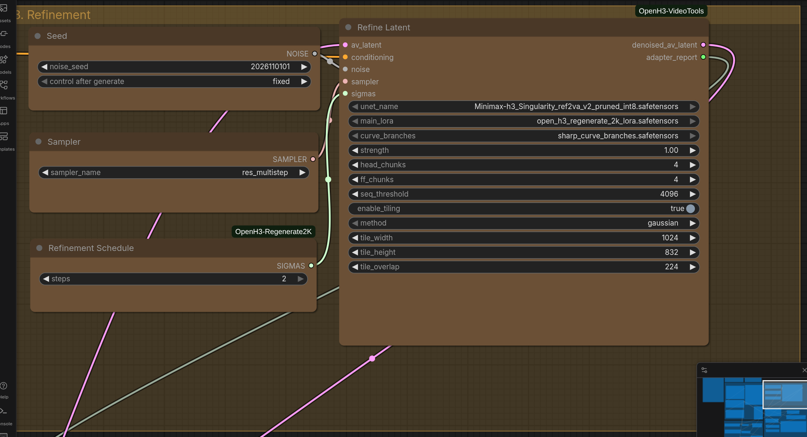
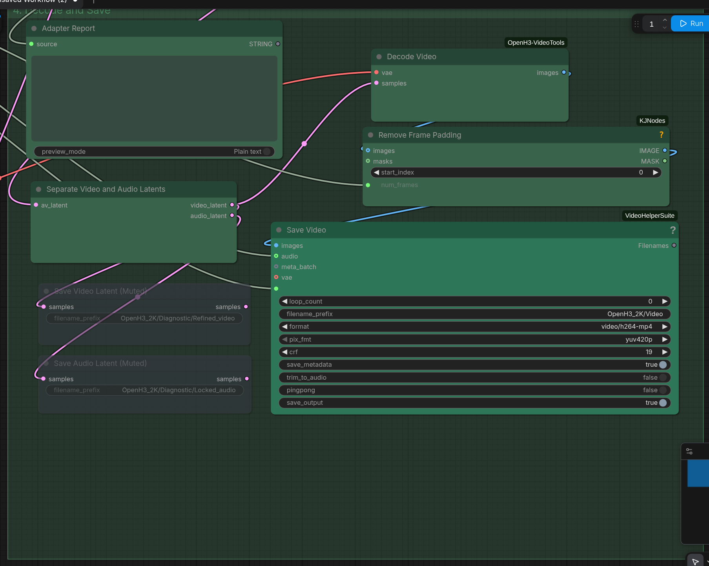

OpenH3 · Hướng dẫn bản gốcOpenH3 Regenerate2K · Bản gốc
Bộ nạp phụ thuộc và hướng dẫn tiếng Việt · v1.0.0 · 09/11/2026. Dành cho ComfyUI Windows Portable đang có trên máy bạn. Gói chỉ có một workflow: OpenH3_Regenerate2K Final.json, đúng file bạn gửi.
File JSON được giữ nguyên từng byte: 36.366 byte, 27 node, 27 liên kết. Không đổi prompt, thông số, model, dây nối, tiêu đề hoặc bố cục. Không thêm preset, không chỉnh skill. SHA256 gốc được ghi trong manifest.json và cuối tài liệu.
Đây là bước hậu kỳ cho VIDEO ĐÃ CÓ: tải MP4 nguồn → chuẩn bị hình/tiếng → VAE encode → latent upscale → OpenH3 refine → decode → lưu MP4. Trong quy trình phim của bạn, hãy render từ storyboard ở workflow tạo video trước, duyệt clip rồi đưa clip đó vào đây.
Dùng nhanh: đóng ComfyUI → giải nén → chạy CAI_DAT.bat → mở lại ComfyUI → chạy KIEM_TRA.bat → mở workflow trong OpenH3_Original → chọn video thật ở Load Video #1 → đặt kích thước đầu ra tại Upscale Latent #6 → Run.
Đã kiểm tra giao diện, schema và chuẩn bị video/âm thanh trên CPU. Chưa render nâng chất lượng bằng GPU hoặc kiểm thử Windows thật; kết quả kiểm tra không phải benchmark RTX 4060 Ti.

Giao diện nạp từ đúng JSON gốc. Dải màu là video kỹ thuật dùng kiểm tra, không phải video mẫu được phân phối trong gói.1. Cài vào đúng Portable
Giải nén ZIP vào một thư mục bình thường rồi đóng cửa sổ ComfyUI/backend. Chạy CAI_DAT.bat bằng cách nhấp đúp. Script dùng Python nhúng của Portable, không yêu cầu Git và không cần bạn chọn workflow JSON.
Đường dẫn mặc định của bạn: C:\Ai\ComfyUI_windows_portable_nvidia\ComfyUI_windows_portable. Thư mục đúng phải chứa ComfyUI và python_embeded. Nếu không tìm thấy, hộp chọn THƯ MỤC sẽ hiện ra; chọn thư mục chứa hai thư mục con này.
Bộ cài kiểm tra Python 3.12+, các native node, H3 direct-buffer VAE và per-VAE output dtype trước khi tải model. Nếu thiếu, dùng update/update_comfyui.bat chính thức trong Portable rồi thử lại. Bộ cài này không tự patch core, đổi Torch/CUDA/driver hoặc thêm launcher đặc biệt.
Sau đó bổ sung dependency Python cần thiết, cài bốn pack node có revision/SHA256 cố định, tải hoặc dùng lại bảy model, rồi sao chép nguyên byte JSON vào ComfyUI/user/default/workflows/OpenH3_Original.
Tải mới toàn bộ khoảng 54,45 GB model. Script kiểm tra SHA256 file có sẵn trước khi dùng lại và có resume cho file .part. Một số model đã có từ các bộ cài H3 trước có thể được dùng lại. File cùng tên sai hash/dung lượng sẽ được giữ nguyên và báo lỗi để bạn xử lý.
Để giữ nguyên tên trong JSON, model ở thư mục con hoặc upscaler có tên canonical khác sẽ được tạo alias đúng tên bằng hardlink khi có thể; nếu khác ổ thì sao chép sau kiểm tra hash. Không sửa đường dẫn model trong JSON để thích nghi.
| File chạy | Công dụng |
|---|
| CAI_DAT.bat | Cài phụ thuộc, model và chép workflow gốc |
| KIEM_TRA.bat | Kiểm tra model, node, enum và bản sao JSON sau khi mở lại ComfyUI |
| CAI_LAI_NODE.bat | Chỉ cài/cài lại bốn pack node, không tải model |
2. Mở và chạy lần đầu
Mở lại ComfyUI bằng launcher NVIDIA bạn đang dùng. Đợi custom node nạp xong, làm mới trình duyệt nếu cần rồi chạy KIEM_TRA.bat. Cổng mặc định là 8188; dùng --port trong CLI nếu bạn chạy cổng khác.
Trong Workflow Browser, mở OpenH3_Original / OpenH3_Regenerate2K Final. Hoặc kéo đúng JSON trong thư mục workflows của bộ cài lên canvas.
Tại Load Video #1, bấm choose file to upload và chọn MP4 nguồn thật. Tên P2_CL050_Norfolk_Release_Run.mp4 và preview Video_00012 trong JSON là dữ liệu cũ được giữ nguyên; gói không kèm các video demo này.
Đặt chiều rộng/cao ở Upscale Latent #6 cho đúng hướng khung hình. Mặc định gốc là 2560×1440 ngang. Với clip dọc, bạn phải chọn kích thước dọc phù hợp. Không đổi kích thước trong node nguồn để thay cho setting đầu ra.
Prompt chung có thể giữ nguyên để thử. Bấm Run và xem kết quả tại ComfyUI/output/OpenH3_2K. Bắt đầu với một clip nguồn ngắn để kiểm tra trên máy bạn trước khi xử lý clip dài.
Trong chuỗi storyboard của bạn: chọn một clip H3 đã đúng nội dung và chuyển động → đưa clip đó vào workflow này → xem lại mặt/áo/tay/tiếng sau refine. Không dùng bước này để thay thế storyboard hoặc dựng lại cảnh còn thiếu.

Nhóm Input and Prompt: #1 chọn video, #1060 chuẩn bị nguồn, #12 chứa prompt bảo toàn nội dung/style.3. Thời lượng, FPS và source_scale
Thời lượng lấy từ video nguồn, không có ô seconds giống workflow tạo video. Prompt có ghi 15 giây cũng không cắt video về 15 giây. Để lấy một đoạn, cắt và xuất MP4 riêng trước khi upload; helper xử lý toàn bộ file local và bỏ qua crop/trim nằm trong VIDEO-object.
Prepare Video #1060 chuẩn hóa rotation và sample aspect ratio, chuyển theo timestamp về 24 FPS bằng lặp/bỏ frame, rồi thêm border nhỏ để mỗi chiều chia hết cho16. Không ép nguồn dọc thành canvas ngang.
source_scale=1.0 giữ kích thước hiển thị nguồn; 0.5 giảm mỗi chiều còn một nửa để giảm tải phần chuẩn bị/encode. Tham số này không phải hệ số upscale cuối. working_resolution chỉ có lựa chọn source trong phiên bản 0.1.11.
max_frames=0 tắt giới hạn frame do người dùng đặt. Giá trị dương sẽ TỪ CHỐI clip vượt giới hạn; không lấy N frame đầu. Toàn bộ frame vẫn nằm trong RAM; không có bảo đảm xử lý clip dài tùy ý.
Helper lặp frame cuối để đạt lưới H3: max(124,17×ceil((N−5)/17)+5). Remove Frame Padding #1061 nhận actual_frame_count qua dây và bỏ phần đệm sau decode. Bảng dưới giả định nguồn có duration tương ứng đúng24 FPS.
| Nguồn | Frame thực | Frame xử lý H3 | Frame đầu ra |
|---|
| 1 giây | 24 | 124 | 24 |
| 5 giây | 120 | 124 | 120 |
| 7 giây | 168 | 175 | 168 |
| 15 giây | 360 | 362 | 360 |
4. Kích thước đầu ra và nút Upscale Latent
Tại #6, width và height là hai ô nhập trực tiếp, không có dây tự ghi đè. File gốc lưu2560×1440; bộ cài giữ đúng giá trị đó. Bạn có thể đổi thủ công trong UI cho lượt xử lý của mình.
Dùng chiều rộng/cao phù hợp với tỷ lệ nguồn và thông thường là bội32. Video dọc không tự làm đầu ra thành dọc. Chọn sai hướng/tỷ lệ có thể làm biến dạng hoặc đổi bố cục; workflow không có letterbox cuối để sửa hộ.
2560×1440 thường được gọi 1440p/2K trong tài liệu này, khoảng 3,69 triệu pixel; không phải 2 megapixel. Các kích thước bội32 có thể lệch nhẹ16:9 tuyệt đối.
Model upscaler ở #30 là learned latent upscaler, trước bước refine. Tên local gốc minimax_h3_latent_upscaler_3d_bf16.safetensors trỏ tới đúng trọng số conv_v1 BF16 theo URL tác giả. Alias này không phải model 2D được đổi tên.
| Mục đích | Ngang | Dọc |
|---|
| Khoảng 1 MP | 1376×768 | 768×1376 |
| Khoảng 1,5 MP | 1664×928 | 928×1664 |
| Khoảng 2 MP | 1920×1088 | 1088×1920 |
| Mặc định1440p/2K | 2560×1440 | 1440×2560 |

Nhóm Encode and Upscale. Đổi đầu ra ở width/height #6; VAE và audio nối theo file gốc.5. Prompt và phong cách 3D của bạn
Prompt #12 dùng Qwen3VL32B H3 NVFP4 AWQ để encode chữ. Node này không xem và phân tích video upload để tự viết mô tả. Prompt chung trong file gốc được giữ nguyên và yêu cầu bảo toàn nội dung, danh tính, tỷ lệ, màu, ánh sáng, hành động, camera, thứ tự shot, style, chữ và soundtrack.
Ba phần của prompt gốc là integrated_multimodal_description, overall_soundscape và non_diegetic_music. Có thể chạy nguyên văn. Nếu muốn mô tả cảnh chính xác hơn, thêm một đoạn ngắn đúng nội dung nguồn trong phần mô tả, không thêm cảnh/nhân vật/hành động chưa có.
Với 3D bán hiện thực Á Đông, pha nét búp bê: dùng clip nguồn đúng style và giữ yêu cầu bảo toàn style hiện tại. Workflow gốc không có LoRA RealismPeople/Cinematic ép sang người thật, cũng không có node character-sheet/Picture reference.
Không dán nguyên prompt Ref2V nhiều Picture/shot storyboard vào đây. Vai trò của prompt này là định hướng tái tạo clip đầu vào, không phải diễn giải lại cả trang storyboard. Đây vẫn là tái tạo sinh ảnh: mặt, chữ, đồ vật và chuyển động có thể thay đổi; cần duyệt kết quả.
Bộ cài giữ encoder NVFP4 AWQ đúng tên gốc, không tự thay bằng INT8/GGUF. Video tác giả dùng RTX 5060 Laptop Blackwell 8 GB và32 GB RAM. RTX 4060 Ti là kiến trúc khác, không có cùng đường NVFP4 native; core có đường emulated/fallback nhưng hiệu năng/bộ nhớ cần thử thực tế.
6. Khu vực Refine trong giao diện
Nhóm Refinement chứa seed #20, sampler #21, lịch sigma #22 và Refine Latent #13. Các thông số hiện trong ảnh là của JSON gốc, không phải preset tối ưu mới do bộ cài tạo.
Bản này dùng 2 bước với res_multistep. Hai bước vẫn có thể mất nhiều thời gian vì mỗi bước xử lý nhiều tile và các phần attention/FF. Không suy ra thời gian render từ số2 hoặc từ video quảng bá8 GBVRAM.
head_chunks, ff_chunks và spatial tiling chia nhỏ phần tính toán để giảm bộ nhớ, có thể tăng thời gian. Spatial tile không có nghĩa đã chia theo thời gian; clip dài vẫn nặng RAM/VRAM. Các thông số cụ thể được giải thích ở trang kế tiếp.

Seed / Sampler / Refinement Schedule / Refine Latent: giữ nguyên2 bước, strength 1.0 và tile 1024×832 overlap 224 của file gốc.7. Ý nghĩa từng setting refine
Giữ các giá trị gốc khi chạy thử chức năng. Nếu sau này bạn thử thay đổi trong UI, giữ một clip/seed cố định để so sánh và không ghi đè bản nguồn đóng gói.
OpenH3 adapter dùng hai file riêng: main_lora và sharp_curve_branches. File branches không phải một LoRA style thông thường để thêm bằng loader LoRA khác. Bản này dùng 2 bước res_multistep, không được gọi là tương đương cấu hình tham chiếu3 bước Euler của dự án upstream.
| Setting / node | Gốc | Công dụng |
|---|
| noise_seed #20 | 2026110101; fixed | Giữ nguồn nhiễu để so lượt chạy, không khóa mặt |
| sampler_name #21 | res_multistep | Thuật toán sampling |
| steps #22 | 2 | Sigma 0.7 → 0.494117647 → 0; hai khoảng |
| unet_name #13 | Singularity v2 INT8 | Backbone H3; đúng revision/file nguồn |
| main_lora #13 | open_h3_regenerate_2k_lora | Adapter tái tạo chi tiết |
| curve_branches #13 | sharp_curve_branches | Bảng/nhánh hiệu chỉnh cho adapter |
| strength #13 | 1.0 | Mức áp dụng adapter; không phải slider nét đơn giản |
| head_chunks #13 | 4 | Chia attention theo head để giảm tải |
| ff_chunks #13 | 4 | Chia feed-forward theo token |
| seq_threshold #13 | 4096 | Ngưỡng sequence cho cơ chế FF chunk |
| enable_tiling #13 | true | Bật lấy mẫu theo tile không gian |
| method #13 | gaussian | Trọng số hòa trộn vùng tile chồng nhau |
| tile_width / height | 1024 /832 | Kích thước tile tính theo pixel, quy về latent |
| tile_overlap | 224 | Vùng chồng để pha tile; tăng làm thêm việc |
8. Âm thanh, decode và lưu file
Audio nguồn đi từ Prepare Video #1060 output source_audio tới Save Video #26. Track đầu tiên được căn theo video và xử lý thành 32 kHz stereo; input im lặng dùng conditioning im lặng và không tạo track nguồn giả. Workflow không có node TTS hoặc tạo giọng Việt mới.
Encode Conditioning Audio #8 và Lock Audio #10 phục vụ nhánh latent: noise mask cho video là1, audio là0. Khi lưu, dùng tiếng nguồn thay vì một track được sinh lại. Vì vậy bước này không sửa phát âm sai đã có trong clip nguồn.
Decode Video #25 dùng native causal H3 VAE và buffer ảnh CPU FP16 để giảm bộ nhớ lưu ảnh trả về. Nó cần core mới có direct-buffer và vae_output_dtype; thiếu các tính năng này phải cập nhật core, không đổi sang decoder khác trong JSON.
Remove Frame Padding #1061 cắt theo framecount thực được nối từ #1060; widget num_frames=1 cũ không có tác dụng khi dây đang điều khiển. FPS của #26 cũng lấy qua dây từ #1060, hiện là24 FPS.
Save Video #26 đang chọn video/h264-mp4, yuv420p, CRF 19, save_metadata=true, trim_to_audio=false, pingpong=false và save_output=true. Đây là FFmpeg/libx264; chuỗi nvenc trong preview cũ không phải định dạng đang chọn.
File lưu ở ComfyUI/output/OpenH3_2K/Video_…mp4. CRF thấp hơn thường tăng chất lượng encode và dung lượng, không chữa lỗi mặt hoặc động tác. Metadata lưu prompt/workflow cùng file. Hai SaveLatent #28/#29 đang muted mode 2 để chẩn đoán khi cần; bộ cài giữ nguyên.

Nhóm Decode and Save: ảnh đã bỏ padding + tiếng nguồn + FPS nguồn đã chuẩn hóa vào node lưu.9. Bảy model và alias của upscaler
Tổng tải mới khoảng 54,45 GB. URL/revision, số byte và SHA256 đầy đủ trong manifest.json. Bộ cài không tải model tạo storyboard, không tải LTX hoặc các LoRA tăng tốc/style khác.
Bốn file đầu từ Singularity/Comfy-Org; ba file sau từ Efficient-Large-Model/Open-H3-Regenerate-2K tại commit 5809c337…. Upscaler tải từ file canonical conv_v1 và lưu đúng tên generic mà JSON gốc yêu cầu. Hai tên có cùng checksum trọng số; không dùng rename để giả định dạng.
Nếu có upscaler conv_v1 từ bộ Apex trước, script tìm và kiểm tra hash rồi tạo alias. Các model nằm trong extra_model_paths.yaml cũng được tìm; khi tên tương đối không dùng được với JSON nguyên gốc, script tạo alias tại models của Portable. File nguồn được giữ nguyên.
| File cần có / thư mục | GB |
|---|
Minimax-h3_Singularity_ref2va_v2_pruned_int8.safetensors
models/diffusion_models | 20.968 |
qwen3vl_32b_minimax_h3_nvfp4_awq.safetensors
models/text_encoders | 15.687 |
minimax_h3_video_vae_int8_convrot.safetensors
models/vae | 2.811 |
minimax_h3_audio_vae_fp32.safetensors
models/vae | 0.605 |
minimax_h3_latent_upscaler_3d_bf16.safetensors
models/latent_upscale_models | 0.691 |
open_h3_regenerate_2k_lora.safetensors
models/loras | 12.452 |
sharp_curve_branches.safetensors
models/loras | 1.239 |
10. Custom node, dependency và backup
Native ComfyUI cung cấp LoadVideo, VAEEncode, MiniMaxH3LatentUpscaleWithModel, LatentUpscaleModelLoader, các node AV latent, noise/sampler, BasicGuider và SamplerCustomAdvanced. Không tìm một pack khác để thay node native bị thiếu.
Bốn ZIP source có trong vendor, đúng checksum/revision. VideoTools 0.1.11 lấy từ link release ghi trong JSON; note yêu cầu 0.1.8 còn sót trong file không làm bộ cài hạ xuống bản đó. Giao diện/widget đã kiểm tra với 0.1.11.
Python dependency cần thiết gồm PyAV, imageio-ffmpeg, Pillow, matplotlib, color-matcher, mss và OpenCV. Installer chỉ bổ sung/nâng phần chưa đạt mức cần thiết, khóa các distribution khác khi pip giải quyết dependency để tránh tự nâng Torch.
Node pack cùng tên khác nội dung sẽ được sao lưu ra ComfyUI/user/OpenH3_Original/backups trước khi cài bản cố định. Nếu copy thất bại sẽ khôi phục bản cũ. Bản sao workflow đã sửa cũng được backup trước khi chép lại JSON nguyên gốc. Log nằm trong thư mục bộ cài/logs.
Khôi phục pack: đóng ComfyUI, chuyển pack mới ra ngoài custom_nodes, chuyển bản backup tương ứng về vị trí cũ rồi mở lại. Chỉ giữ một bản hoạt động của mỗi pack. Không chạy CAI_LAI_NODE chỉ để xử lý một warning từ node phụ không có trong graph.
| Pack / phiên bản | Node dùng trực tiếp hoặc bên trong helper |
|---|
Songssx/ComfyUI-OpenH3-Regenerate2K
adf6af360d8f3cfaa473ef2ed254d7a787bfb169 | OpenH3LockAudioForRefine
OpenH3RegenerateSigmas
OpenH3RegenerateModelPatch |
TensorAlchemist/ComfyUI-OpenH3-VideoTools
v0.1.11 · f737f50205fceb474742654ac05c6f3fb1c0fd52 | TAOpenH3AutoInput
TAOpenH3PromptEncodeRelease
TAOpenH3RefineRelease
TAOpenH3TiledDiffusion
TAOpenH3VAEDecodeLowMemory |
kijai/ComfyUI-KJNodes
e8e88f7c88e3f6205b122f5de87e69a09fbce5ac | GetImageRangeFromBatch
MiniMaxLowVRAMAttention
MiniMaxChunkFeedForward |
Kosinkadink/ComfyUI-VideoHelperSuite
4d907bee61e92c2e65af3bd6383a4e4d356126d1 | VHS_VideoCombine |
11. Lỗi thường gặp và giới hạn phần cứng
Video tác giả dùng RTX 5060 Laptop 8 GB và32 GB RAM, khác máy RTX 4060 Ti16 GB của bạn. Không có số phút render cam kết cho 4060 Ti. Tiling giảm một phần VRAM nhưng toàn clip và buffer decode vẫn tốn RAM.
Ví dụ 168 frame 2560×1440 lưu RGB FP16 riêng đã khoảng 3,72 GB, chưa tính input, latent, weights hoặc temporary buffer. max_frames=0 không có nghĩa bộ nhớ không giới hạn. Giữ SSD trống cho output/pagefile và thử clip ngắn trước.
| Lỗi / hiện tượng | Xử lý |
|---|
| Thiếu MiniMaxH3LatentUpscaleWithModel / direct-buffer | Dùng updater chính thức của Portable và mở lại. Bộ cài dừng trước khi tải model nếu core thiếu tính năng. |
| Unknown TAOpenH3… | Chạy CAI_LAI_NODE, mở lại ComfyUI và xem log import. Kiểm tra chỉ có một bản VideoTools 0.1.11. |
| Không tìm model / enum sai | Chạy CAI_DAT để tạo đúng tên/alias. Không tự đổi JSON sang một file khác chỉ vì tên gần giống. |
| LoadVideo báo thiếu file | Chọn MP4 thật tại #1; video demo/preview cũ không nằm trong bộ cài. |
| Đổi crop/trim nhưng clip vẫn nguyên | Helper đọc toàn file upload. Cắt/xuất đoạn cần dùng ra MP4 riêng trước. |
| max_frames báo vượt giới hạn | Đây là giới hạn từ chối input, không phải công cụ cắt clip. Dùng clip ngắn hơn hoặc thay cap có chủ đích. |
| Nguồn HDR / PQ / HLG bị từ chối | Chuyển HDR sang SDR trước khi dùng helper theo giới hạn nguồn hiện tại. |
| OOM / RAM đầy | Thử clip ngắn và kích thước đầu ra thấp hơn bằng UI; có thể giảm source_scale. Kiểm tra pagefile/SSD. File gốc đóng gói không bị đổi. |
| Méo tỷ lệ / video dọc thành ngang | Đặt width/height #6 theo hướng nguồn; đầu vào tự dò không có nghĩa đầu ra tự chọn hướng. |
| Mặt/chữ thay đổi sau refine | Đây là tái tạo sinh ảnh. Duyệt nháp, dùng nguồn tốt hơn/setting phù hợp; không có khóa mặt tuyệt đối. |
| Thiếu Triton cho PatchTritonVAE | Đó là node KJ phụ, không được graph này dùng. Xem KIEM_TRA có đủ 27 type cần thiết trước khi cài thêm thứ không liên quan. |
12. Kiểm thử và nguồn tài liệu
23 test bộ cài đã qua: copy nguyên byte, pin/SHA, giữ file cũ, alias/hardlink/copy, extra model paths, ZIP traversal/symlink, backup/rollback/idempotence, resume/hash/HTML. Script thật được chạy bằng Python -I trong Portable giả lập với đường dẫn có dấu/khoảng trắng và model fixture nhỏ.
ComfyUI 0.44.0 commit fca60fe70e5b84c5c6b058263653d15cb3401e44, frontend 1.58.5, comfy-kitchen 0.2.41, Torch 2.10 CPU: nạp JSON gốc không node lạ, xuất 21 API node, native validate_prompt không node_errors và có output lưu #26. Hai SaveLatent muted được giữ nguyên.
CPU media test: nguồn 1 giây 24 frame được chuẩn bị thành 124 frame nội bộ, actual_frame_count vẫn 24; audio nguồn32 kHz stereo, source_scale 0.5 hoạt động, cap 12 từ chối thay vì cắt. Đã kiểm tra sigma 2 bước và audio noise mask 0. Không có render qua model H3/VAE thật trong kiểm tra này.
Bảy URL model trả prefix safetensors hợp lệ. Điều này chỉ kiểm tra truy cập/định dạng ban đầu; file tải thật trên máy bạn vẫn phải qua kiểm tra toàn bộ SHA256. Tất cả model trong môi trường schema test là enum fixture, không phải trọng số suy luận.
Nguồn: JSON bạn gửi; video Drive 1PRqGB9z5rjtHzSpAMiKHhPNhwtd8wdjm; README/release VideoTools 0.1.11; Songssx OpenH3; KJNodes; VideoHelperSuite; ComfyUI native H3; metadata Hugging Face tại revision ghi trong manifest. Nguồn tải và giấy phép từng thành phần trong SOURCES.md.
Chưa kiểm thử Windows thật, GPU RTX 4060 Ti, peak RAM/VRAM hoặc so chất lượng/tốc độ. Không nhận đã có benchmark chỉ từ video minh họa. Bộ cài không tự chạy GPU, thay skill hoặc đổi JSON để vượt kiểm tra.
SHA256 workflow gốc: 77801992727a09a22547b44f0b70b985e9472820da2e21941a87cf778d8e5973